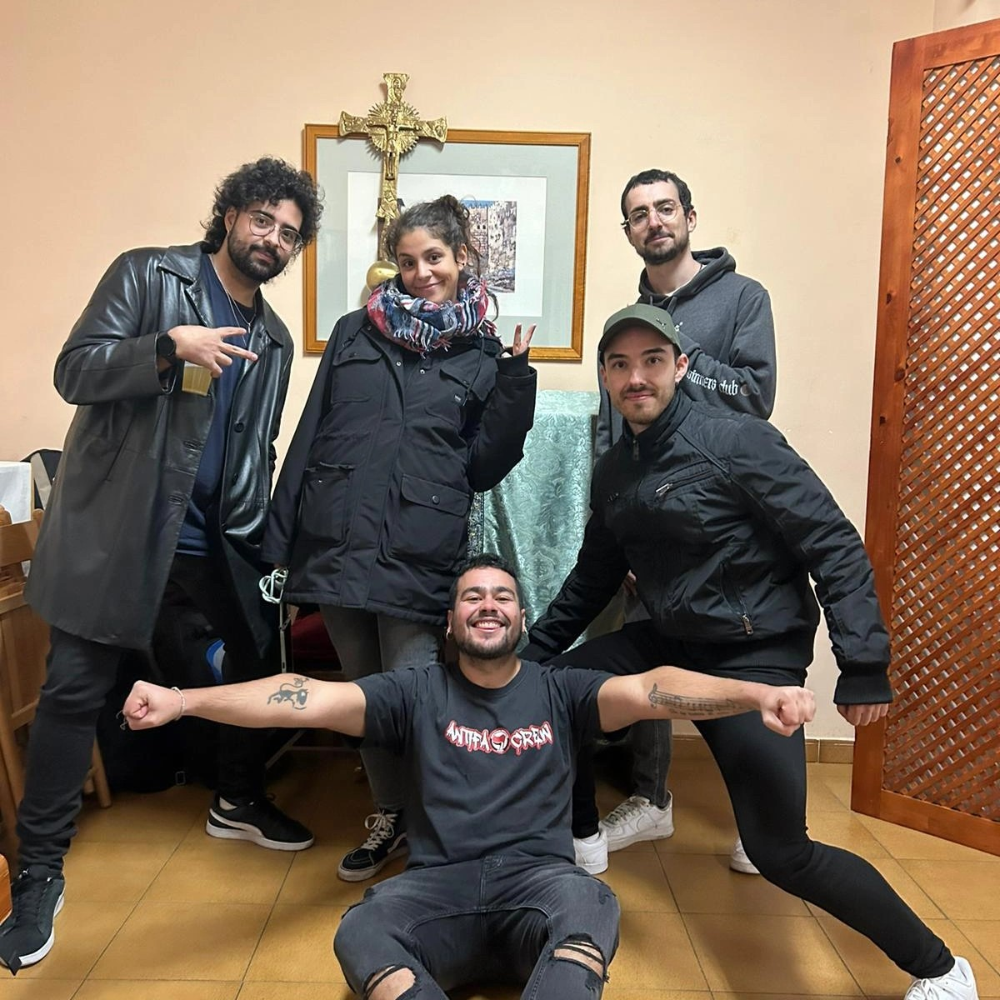
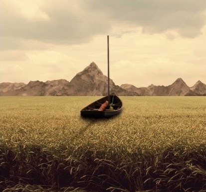
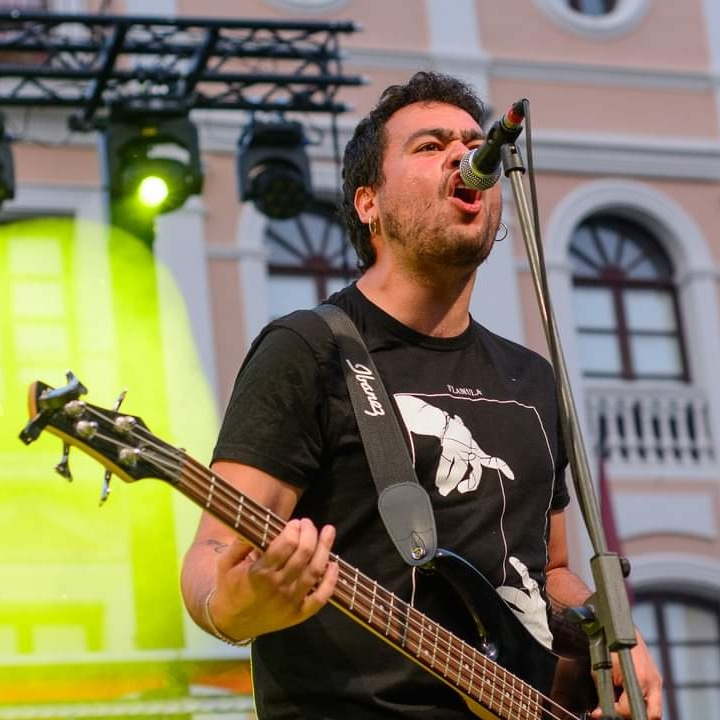
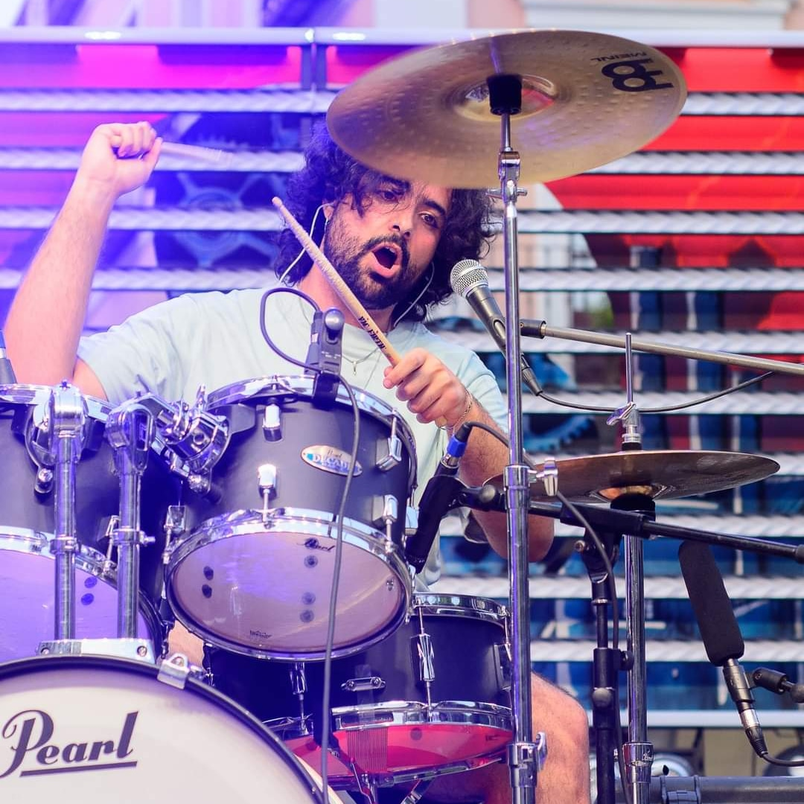
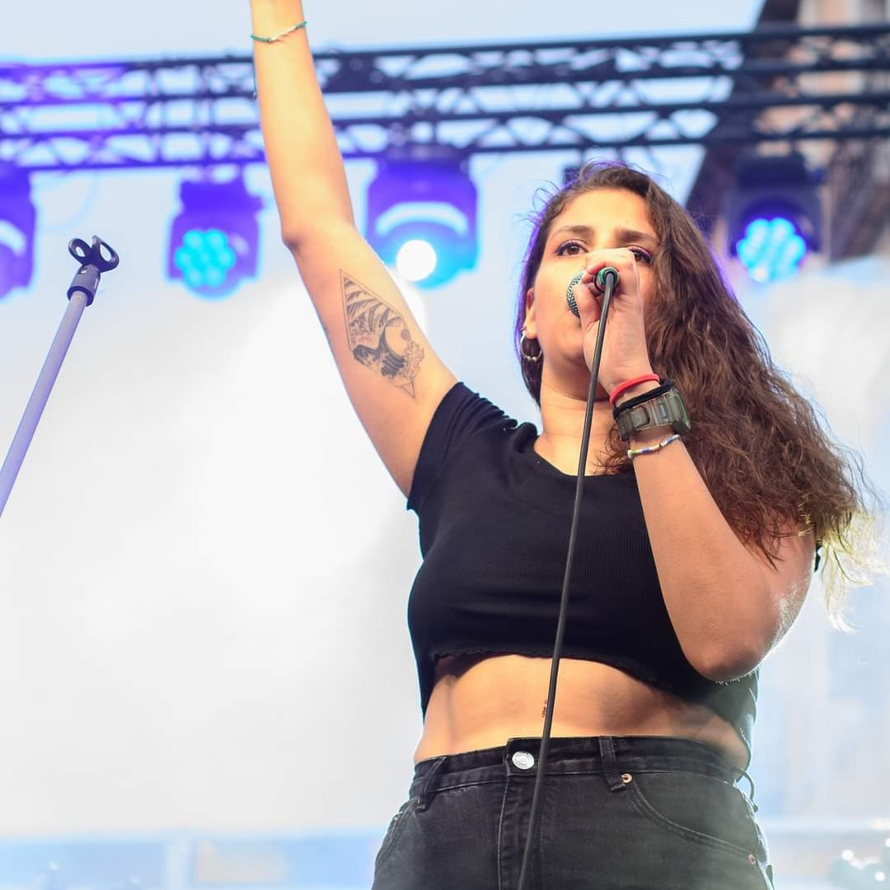
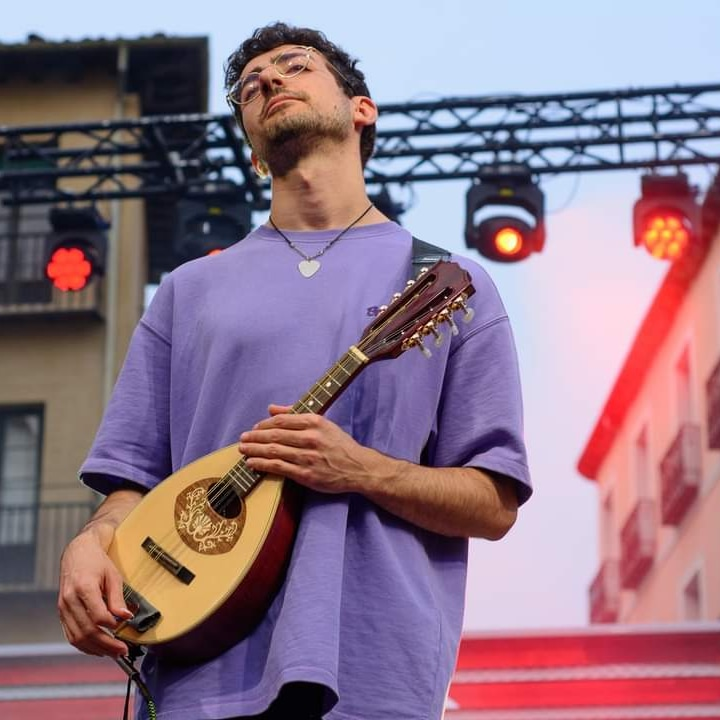
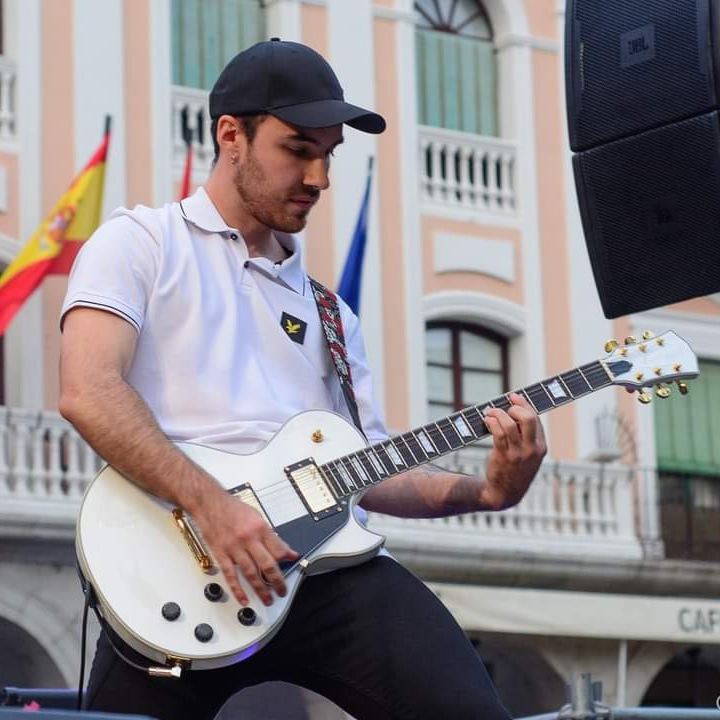

Biografía
La Caraba es un grupo musical segoviano de punk rock que trata de labrarse un hueco en la escena musical local. Fundado en el año 2014 bajo el nombre de “Non Asinum”, el grupo se distinguió por sus influencias del punk tradicional español, tal como demuestra su primer EP “Gritando dentro”. Fue en el año 2022 cuando la banda resurgió como “La Caraba”, buscando bajo este nuevo nombre explorar nuevos horizontes musicales y desarrollar un estilo de música más único.
La Caraba se distingue ahora por su enérgico estilo de punk rock, que fusiona influencias del hardcore y el folclore segoviano, creando así un estilo propio autodenominado como “folkore”. La banda combina la crudeza y la agresividad propia del punk con elementos melódicos y ritmos tradicionales de su tierra natal. Así se observa en su single “La Rave de los Pobres”, donde introducen como melodía final un pasacalles típico segoviano adaptado a la guitarra eléctrica y la bandurria, tras una canción al más estilo punk rock.
Las letras de La Caraba son caracterizadas por el uso de diferentes elementos poéticos para abordar temas muy variados, desde el amor tóxico hasta la retro inspección del uno mismo. Sus canciones reflejan una visión ácida de la realidad pero sin dejar de lado la identidad cultural y las tradiciones segovianas, que se integran de forma ingeniosa en su música.
l grupo cuenta con 5 miembros: Claudia (voz), Edu (bajo y coros), Raúl (guitarra), Juan (Guitarra), y Javi (batería y coros). La banda combina la voz femenina de Claudia y los coros de Edu y Javi para obtener contrastes muy característicos del hardcore, permitiendo realizar cambios bruscos y dinámicos en la intensidad de las canciones.
Actualmente la banda está produciendo su primer disco de manera autofinanciada, esperando poder publicarlo a finales de este año, mientras que busca participar en conciertos para forjar una mayor presencia por toda la provincia de Segovia.

Miembros
Edu
Edu es uno de los fundadores del grupo. Lleva el bajo con garra y hace de segunda voz con potentes guturales. Combina su grupo con sus estudios en magisterio a la vez que hace de camarero en un bar.

"Jaby"
A las baquetas está Jaby. Se unió más tarde a la banda y fue un gran descubrimiento. Con su chorro de voz y la poesía de sus letras, se nota que es guionista, le da un brillo especial a la banda.

Clau
El último fichaje de la banda. Con su vozarrón metalero y su puesta en escena llena de carisma el escenario. De día cambia el micro por la bata para ser tu óptica de confianza.

Juan
Podriamos decir que es guitarrista, pero es mucho más. El increíble hombre orquesta seguramente sea el más virtuoso del grupo. En los conciertos sorprende sacando una bandurria, mandolina o dulzaina dando un sonido único a la banda.

Raul
Y por último pero no menos importante tenemos al otro guitarra del grupo. Gran letrista y rasga las cuerdas como nadie. A parte de tocar la guitarra acaba de terminar sus estudios de arquitectura.

Redes
Puedes seguirnos en nuestras redes sociales clicando en las imágenes:
 |
 |
 |